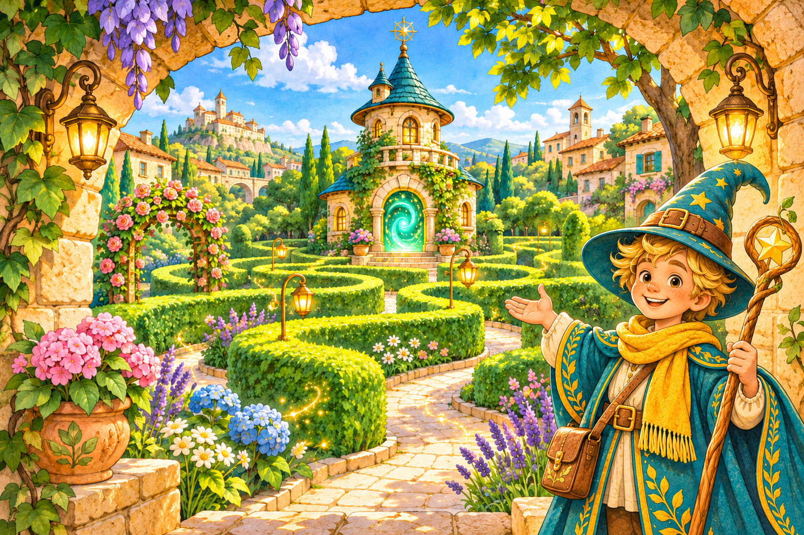

UN’AVVENTURA 3D. SEI SIGILLI. UN INCANTESIMO.
IL LABIRINTO
DEL MAGO GIULIANO
IL FARO DEL GIARDINO SI È SPENTO.
GIULIANO HA NASCOSTO SEI SCINTILLE DI LUCE.
RIAPRI I PASSAGGI E RIPORTA LA MAGIA ALLA TORRE!
LA TUA MISSIONE
ESPLORA CON LE FRECCE O CON I COMANDI SULLO SCHERMO. PUOI ANCHE SCORRERE IL DITO SUL LABIRINTO.
RISOLVI LE MOLTIPLICAZIONI PER LIBERARE SEI PASSAGGI. IL TACCUINO TI AIUTA A ORGANIZZARE I CALCOLI.
RAGGIUNGI LA TORRE LUMINOSA. I VICOLI NASCONDONO PICCOLE LUCCIOLE DA RITROVARE!
SCEGLI IL TUO PERCORSO
IL CANCELLO DELLE RADICI
IL LABIRINTO DEL MAGO GIULIANO
✦ TU❖ SIGILLO♜ TORRELUCCIOLE 0 / 3
✦
L’INCANTESIMO È SCIOLTO!
IL FARO BRILLA DI NUOVO
«SEI ARRIVATO! OGNI PASSAGGIO LIBERATO
HA RIPORTATO UN PO’ DI LUCE NEL MIO GIARDINO.»
IL MAGO GIULIANO
APRI IL TUO SCRIGNO DEI DISTINTIVI →PREPARO IL GIARDINO…